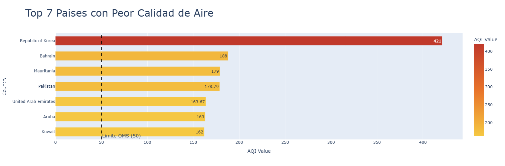
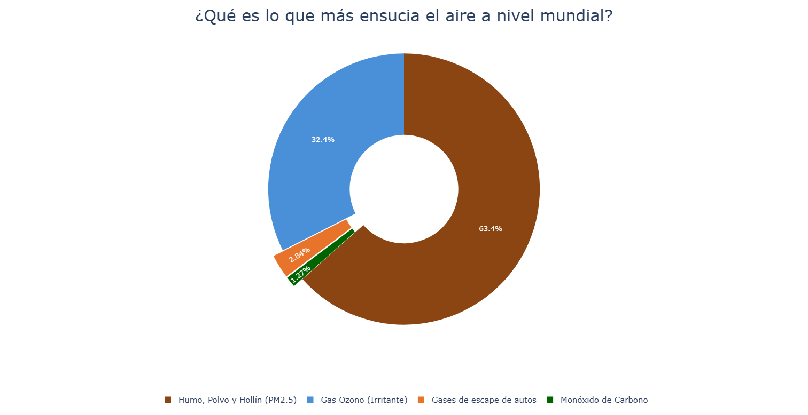
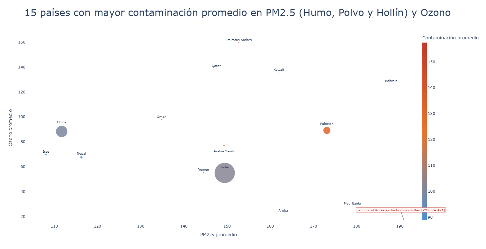

01
Top 7 Paises con Peor Calidad de Aire
Promedio del indice AQI general por pais. Valores mas altos indican mayor contaminacion atmosferica.

Bueno (0–50)
Moderado (51–100)
Peligroso para personas con sensibilidad (101–150)
Peligroso (151–200)
02
¿Que es lo que mas ensucia el aire a nivel mundial?
Distribucion porcentual del promedio de cada contaminante: PM2.5, Ozono, NO₂ y CO.

Humo, Polvo y Hollín (PM2.5)
Gas Ozono (Irritante)
Gases de escape de autos (NO₂)
Monoxido de Carbono (CO)
03
Top 15 Paises con Mayor Contaminacion Promedio
Relacion entre PM2.5 y Ozono por país. El tamaño del circulo indica la cantidad de ciudades con datos disponibles.

● Tamaño = N° de ciudades
Eje X = PM2.5 promedio
Eje Y = Ozono promedio